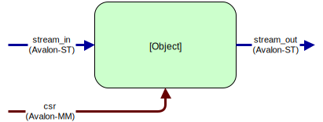
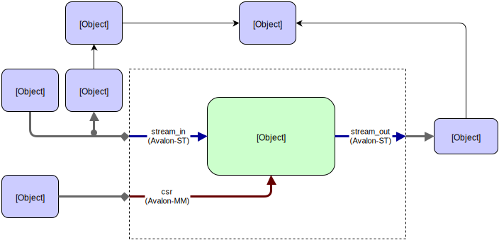

Tutorial: Endian Swapper¶
In this tutorial we’ll use some of the built-in features of Cocotb to quickly create a complex testbench.
Note
All the code and sample output from this example are available on EDA Playground
For the impatient this tutorial is provided as an example with Cocotb. You can run this example from a fresh checkout:
cd examples/endian_swapper/tests
make
Design¶
We have a relatively simplistic RTL block called the endian_swapper. The DUT has three interfaces, all conforming to the Avalon standard:
The DUT will swap the endianness of packets on the Avalon-ST bus if a configuration bit is set. For every packet arriving on the “stream_in” interface the entire packet will be endian swapped if the configuration bit is set, otherwise the entire packet will pass through unmodified.
Testbench¶
To begin with we create a class to encapsulate all the common code for the testbench. It is possible to write directed tests without using a testbench class however to encourage code re-use it is good practice to create a distinct class.
class EndianSwapperTB(object):
def __init__(self, dut):
self.dut = dut
self.stream_in = AvalonSTDriver(dut, "stream_in", dut.clk)
self.stream_out = AvalonSTMonitor(dut, "stream_out", dut.clk)
self.csr = AvalonMaster(dut, "csr", dut.clk)
self.expected_output = []
self.scoreboard = Scoreboard(dut)
self.scoreboard.add_interface(self.stream_out, self.expected_output)
# Reconstruct the input transactions from the pins and send them to our 'model'
self.stream_in_recovered = AvalonSTMonitor(dut, "stream_in", dut.clk, callback=self.model)
With the above code we have created a testbench with the following structure:
If we inspect this line-by-line:
self.stream_in = AvalonSTDriver(dut, "stream_in", dut.clk)
Here we’re creating an AvalonSTDriver instance. The constructor requires 3 arguments - a handle to the entity containing the interface (dut), the name of the interface (stream_in) and the associated clock with which to drive the interface (dut.clk). The driver will auto-discover the signals for the interface, assuming that they follow the naming convention interface_name _ signal.
In this case we have the following signals defined for the stream_in interface:
| Name | Type | Description (from Avalon Specification) |
|---|---|---|
| stream_in_data | data | The data signal from the source to the sink |
| stream_in_empty | empty | Indicates the number of symbols that are empty during cycles that contain the end of a packet |
| stream_in_valid | valid | Asserted by the source to qualify all other source to sink signals |
| stream_in_startofpacket | startofpacket | Asserted by the source to mark the beginning of a packet |
| stream_in_endofpacket | endofpacket | Asserted by the source to mark the end of a packet |
| stream_in_ready | ready | Asserted high to indicate that the sink can accept data |
By following the signal naming convention the driver can find the signals associated with this interface automatically.
self.stream_out = AvalonSTMonitor(dut, "stream_out", dut.clk)
self.csr = AvalonMaster(dut, "csr", dut.clk)
We do the same to create the monitor on stream_out and the CSR interface.
self.expected_output = []
self.scoreboard = Scoreboard(dut)
self.scoreboard.add_interface(self.stream_out, self.expected_output)
The above lines create a Scoreboard instance and attach it to the stream_out monitor instance. The scoreboard is used to check that the DUT behaviour is correct. The call to add_interface takes a Monitor instance as the first argument and the second argument is a mechanism for describing the expected output for that interface. This could be a callable function but in this example a simple list of expected transactions is sufficient.
# Reconstruct the input transactions from the pins and send them to our 'model'
self.stream_in_recovered = AvalonSTMonitor(dut, "stream_in", dut.clk, callback=self.model)
Finally we create another Monitor instance, this time connected to the stream_in interface. This is to reconstruct the transactions being driven into the DUT. It’s good practice to use a monitor to reconstruct the transactions from the pin interactions rather than snooping them from a higher abstraction layer as we can gain confidence that our drivers and monitors are functioning correctly. We also pass the keyword argument callback to the monitor constructor which will result in the supplied function being called for each transaction seen on the bus with the transaction as the first argument. Our model function is quite straightforward in this case - we simply append the transaction to the expected output list and increment a counter:
def model(self, transaction):
"""Model the DUT based on the input transaction"""
self.expected_output.append(transaction)
self.pkts_sent += 1
Test Function¶
There are various ‘knobs’ we can tweak on this testbench to vary the behaviour:
- Packet size
- Backpressure on the stream_out interface
- Idle cycles on the stream_in interface
- Configuration switching of the endian swap register during the test.
We want to run different variations of tests but they will all have a very similar structure so we create a common run_test function. To generate backpressure on the stream_out interface we use the BitDriver class from cocotb.drivers.
@cocotb.coroutine
def run_test(dut, data_in=None, config_coroutine=None, idle_inserter=None, backpressure_inserter=None):
cocotb.fork(Clock(dut.clk, 5000).start())
tb = EndianSwapperTB(dut)
yield tb.reset()
dut.stream_out_ready <= 1
# Start off any optional coroutines
if config_coroutine is not None:
cocotb.fork(config_coroutine(tb.csr))
if idle_inserter is not None:
tb.stream_in.set_valid_generator(idle_inserter())
if backpressure_inserter is not None:
tb.backpressure.start(backpressure_inserter())
# Send in the packets
for transaction in data_in():
yield tb.stream_in.send(transaction)
# Wait at least 2 cycles where output ready is low before ending the test
for i in xrange(2):
yield RisingEdge(dut.clk)
while not dut.stream_out_ready.value:
yield RisingEdge(dut.clk)
pkt_count = yield tb.csr.read(1)
if pkt_count.integer != tb.pkts_sent:
raise TestFailure("DUT recorded %d packets but tb counted %d" % (
pkt_count.integer, tb.pkts_sent))
else:
dut._log.info("DUT correctly counted %d packets" % pkt_count.integer)
raise tb.scoreboard.result
We can see that this test function creates an instance of the testbench, resets the DUT by running the coroutine tb.reset() and then starts off any optional coroutines passed in using the keyword arguments. We then send in all the packets from data_in, ensure that all the packets have been received by waiting 2 cycles at the end. We read the packet count and compare this with the number of packets. Finally we use the tb.scoreboard.result to determine the status of the test. If any transactions didn’t match the expected output then this member would be an instance of the TestFailure result.
Test permutations¶
Having defined a test function we can now auto-generate different permutations of tests using the TestFactory class:
factory = TestFactory(run_test)
factory.add_option("data_in", [random_packet_sizes])
factory.add_option("config_coroutine", [None, randomly_switch_config])
factory.add_option("idle_inserter", [None, wave, intermittent_single_cycles, random_50_percent])
factory.add_option("backpressure_inserter", [None, wave, intermittent_single_cycles, random_50_percent])
factory.generate_tests()
This will generate 32 tests (named run_test_001 to run_test_032) with all possible permutations of options provided for each argument. Note that we utilise some of the built-in generators to toggle backpressure and insert idle cycles.